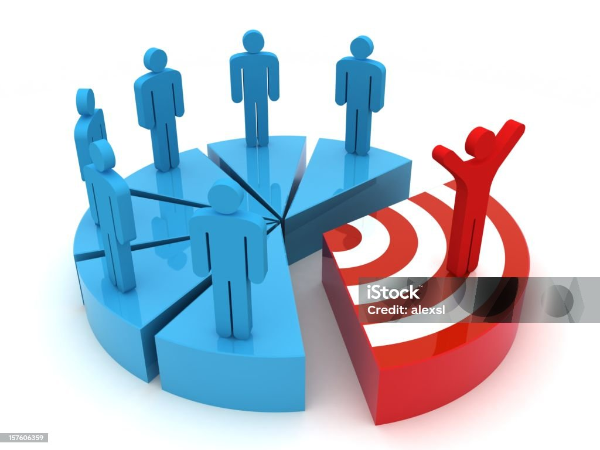

🔍Antes de lanzar una idea o producto, un emprendedor necesita mirar más allá de su entusiasmo personal. El análisis de mercado es el proceso que permite entender a quién se quiere llegar, qué necesidades existen, qué ofrecen otros y cómo diferenciarse.
Este paso no se trata de hacer grandes estudios complejos, sino de observar con atención, hacer preguntas clave y recoger información útil para tomar mejores decisiones.
Un emprendimiento sin análisis es como navegar sin mapa: puede avanzar, pero sin rumbo claro ni control sobre los riesgos.
CONOCER tu mercado es como tener un mapa antes de iniciar el viaje.
👉 Ejemplo: Si alguien quiere vender comida saludable, necesita saber qué tipo de alimentos prefieren sus clientes, cuánto están dispuestos a pagar, qué opciones ya existen en su zona y qué le haría diferente.
Investigación de Mercado
Antes de lanzar una idea o producto, un emprendedor necesita mirar más allá de su entusiasmo personal.
El análisis de mercado es el proceso que permite entender a quién se quiere llegar, qué necesidades existen, qué ofrecen otros y cómo diferenciarse.
Este paso no se trata de hacer grandes estudios complejos, sino de observar con atención, hacer preguntas clave y recoger información útil para tomar mejores decisiones.
Un emprendimiento sin análisis es como navegar sin mapa: puede avanzar, pero sin rumbo claro ni control sobre los riesgos.
👉 Ejemplo: Si alguien quiere vender comida saludable, necesita saber qué tipo de alimentos prefieren sus clientes, cuánto están dispuestos a pagar, qué opciones ya existen en su zona y qué le haría diferente.
Segmentación del Cliente

No todos los clientes son iguales. La segmentación consiste en identificar grupos específicos de personas a los que realmente les interesa tu producto o servicio. Define a tu cliente objetivo para enfocar tus esfuerzos de marketing.
Estos grupos pueden definirse por edad, ubicación, estilo de vida, intereses, nivel económico, entre otros factores.
📌 RECUERDA: Cuando segmentas bien, comunicas mejor y vendes con más efectividad.
👉 Ejemplo: Un joven que vende mochilas personalizadas decide enfocarse en estudiantes universitarios creativos, en lugar de tratar de vender a todo el mundo.
Tendencias del Mercado
📌Identifica las tendencias que pueden influir en tu negocio.
Las tendencias muestran hacia dónde se está moviendo el comportamiento del consumidor.
Detectarlas a tiempo permite al emprendedor adaptarse y aprovechar nuevas oportunidades.
Observar redes sociales, noticias del sector, cambios tecnológicos o nuevas costumbres puede darte pistas sobre lo que viene.📈
👉 Ejemplo: Una persona que ofrece clases de cocina detecta que crece el interés por recetas veganas y decide incluir un módulo especial solo para ese público.